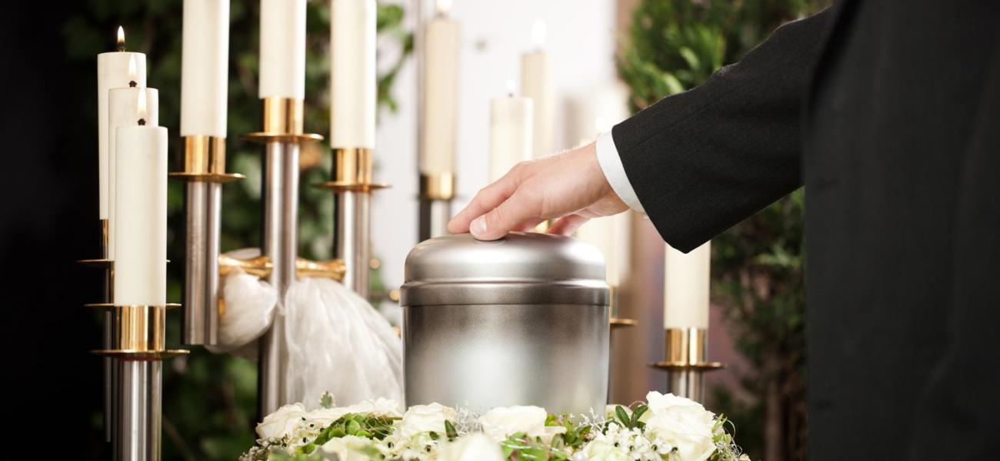
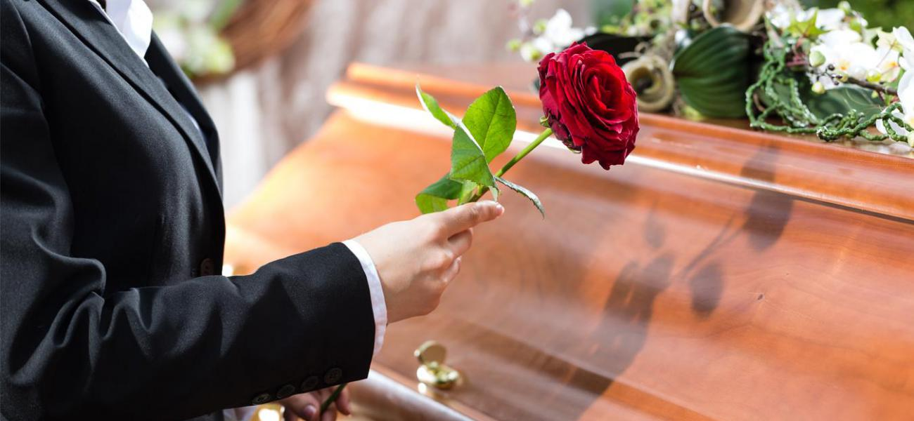
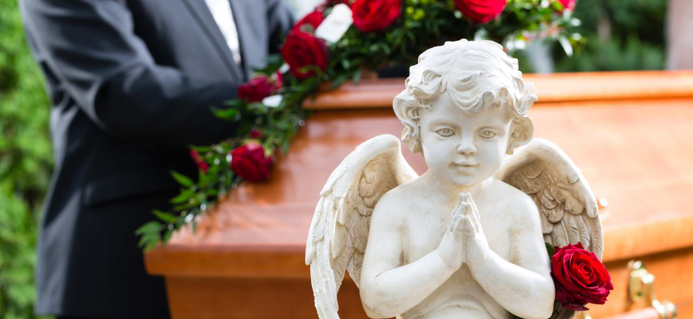

Цілодобова ритуальна служба в Черкасах надає найповніший комплекс ритуальних послуг в Черкасах та Черкаській
області ось уже 20 років.
Історично знаходимось на території Першої Міської Лікарні в Черкасах.
Організація поховань в Черкасах відповідально та за помірну ціну.
Якщо Ви обрали нашу ритуальну службу - Вам вже не треба турбуватись за проведення поховання
Допомагаємо в оформленні документів на поховання та у вирішенні бюрократичних питань, яким на місце в тяжку
хвилину втрати.
Наше ритуальне бюро знаходиться в Черкасах й надає ритуальні послуги не тільки в Черкасах, але й по всій
Черкаській області.
Співробітники «Ритуальні послуги в Черкасах» допоможуть Вам пережити тяжкий момент, візьмуть на себе всі
організаційні завдання з поховання, нададуть Вам психологічну підтримку.
Поховання рідної Вам людини відбудеться гідно, урочисто та у повній відповідності до Ваших побажань та
релігійних традицій.


